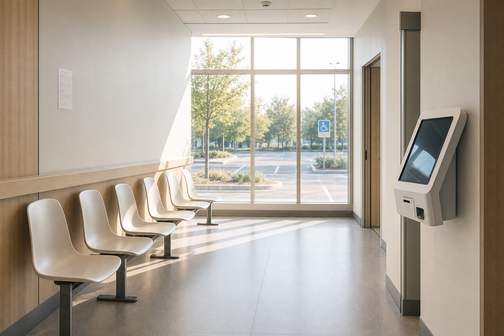
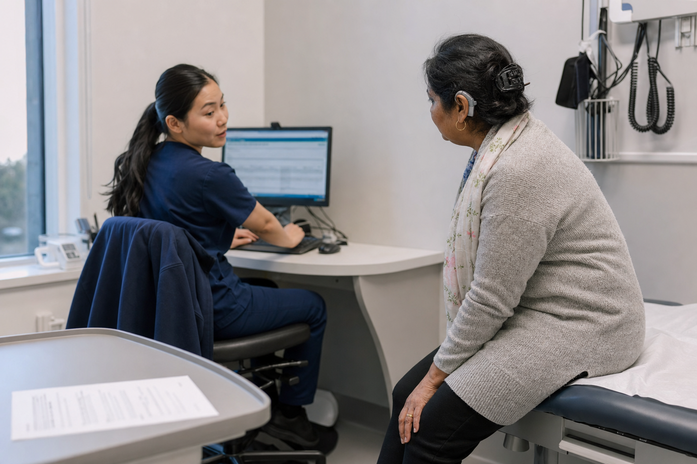
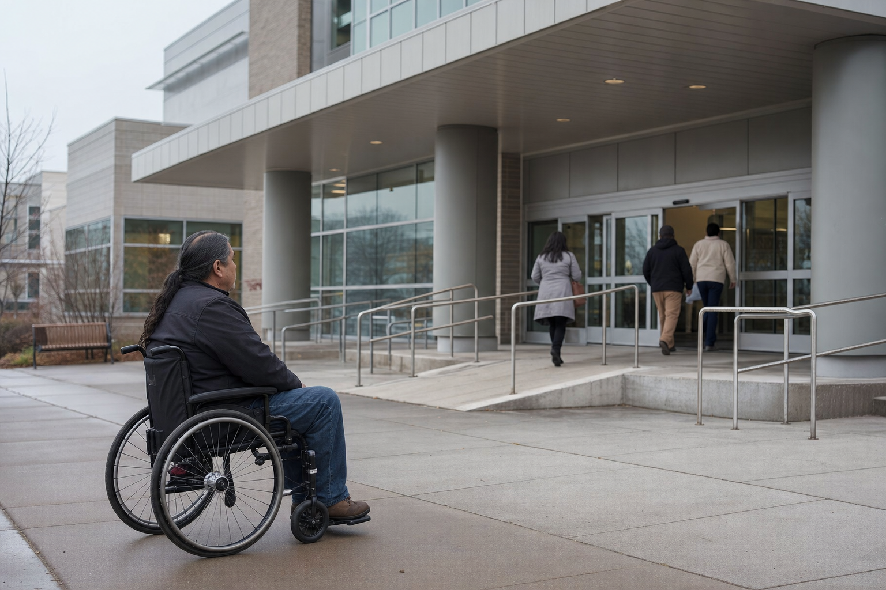
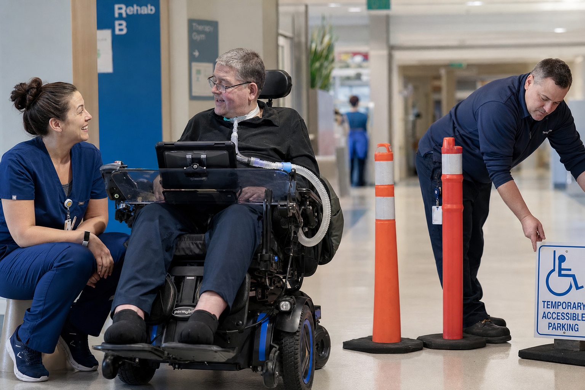

Pause and Assess
Before you act, take a moment. Is there an accessibility need here? Don't assume — observe.
Foundations of Disability, Inclusion & Accessible Design
Distinguish between the medical, social, and human-rights models of disability.
Recognize the physical, sensory, attitudinal, communication, and systemic barriers a person may encounter at UHN.
Use the four areas (Awareness, Communication, Environment, Response) to guide everyday decisions.
Pause and Assess, Listen, Apply, Adapt, and Seek Support when an accessibility need is identified.

According to Statistics Canada, more than 27% of Canadians aged 15 and older have at least one disability. In Ontario, that number is even higher.
That means more than one in four people who come to UHN for care may experience barriers. And many disabilities are non-visible.
Disability is not rare — it is part of everyday life at UHN. Accessible care is not optional; it is essential.

Patients avoid appointments because booking systems are unusable, entrances are inaccessible, or intake forms create barriers before care even begins.
Healthcare systems were often designed without disability in mind — narrow doorways, small print on forms, phone-only booking, waiting rooms with no seating options.
Every missed appointment is a missed diagnosis.

Misdiagnosis and inadequate treatment occur when communication barriers are not addressed — wrong assumptions about what a patient needs, speaking too quickly, or relying on written-only instructions.
A patient who cannot access information in their preferred format cannot participate fully in their own care.
Communication is care. If the message doesn't land, the care doesn't either.

Patients delay or abandon care entirely because past experiences were inaccessible, dismissive, or dehumanizing. This is especially true for people who have experienced compounded barriers.
Indigenous peoples in Canada face compounded barriers — historical trauma, systemic racism, and geographic isolation intersect with disability to create unique challenges in accessing healthcare.
Focus: Individual deficit — "What's wrong with this person?"
The medical model focuses on what's "wrong" with a person. It treats disability as a condition to be fixed. This model has its place in clinical care, but when it's the only lens, it puts all the responsibility on the individual.
Focus: Environmental barriers — "What barriers exist in our systems?"
The social model shifts the focus to the environment. It says disability happens when barriers in our systems, spaces, and attitudes prevent someone from participating. A person who uses a wheelchair isn't disabled by the wheelchair — they're disabled by stairs.
Focus: Human rights and equal participation (UN CRPD)
The rights-based model goes further. It says people with disabilities have a legal and moral right to full participation. This is the model behind the UN Convention on the Rights of Persons with Disabilities and Ontario's AODA.
At UHN, we use rights-based and social model thinking — focusing on removing barriers rather than expecting individuals to adapt.
This model will appear in every guide in this series. The four areas work together — you might notice a barrier (awareness), ask the person how to help (communication), adjust the space (environment), and follow up (response).
Before you act, take a moment. Is there an accessibility need here? Don't assume — observe.
This path isn't a one-time checklist. It's a way of thinking. You'll see it in every guide in this series, applied to different situations and different types of disability.
Accessibility includes usability. Meeting technical standards is not enough. Offer multiple options and report barriers upstream.
You're working at the front desk when Mrs. Okafor, a 68-year-old patient, arrives looking frustrated. She explains that she tried to use the new online booking system but couldn't navigate it. The system meets accessibility standards, but she has limited digital literacy and finds it confusing. She's been trying for three days and finally came in person.

Meeting technical standards doesn't guarantee practical accessibility. Consider accessibility from the user's perspective. Report barriers — don't just work around them.
You notice a patient with low vision squinting at a directional sign in the outpatient clinic. The sign was recently installed and meets Ontario Building Code standards, but the font is small and it's mounted high on the wall. The patient asks you for directions to the lab.

Accessibility requires awareness, curiosity, and flexibility beyond any checklist. Take time to listen, ask respectful questions, and adapt to individual needs.
Your team uses an accessibility checklist when supporting patients. A colleague mentions that a patient who speaks Cantonese and has a cognitive disability seemed confused during intake, even though the checklist was completed. Your colleague says, "We followed the checklist — I'm not sure what else we can do."
Correct answer: B. The social model focuses on barriers in systems and environments, not individual deficits.
The social model says people are disabled by barriers in society — stairs instead of ramps, information only in print, attitudes that exclude.
Correct answer: A. Under the AODA, public sector organizations must provide accessibility training to all employees and volunteers.
The other options are not specific AODA requirements, though they may be good practices.
Correct answer: B. Address the immediate need first — find an accessible room. Then report the barrier for systemic fix.
Consider the Accessibility Decision Path — first address the person's immediate need (Pause and Assess), then seek support for systemic improvement.
MAP-Template-Guide-01.pdf — download and keep your action plan.
Think of one patient interaction this week. Which moment would have shifted if you had paused to ask, before you acted?
[0:00] A hospital network can spend 50 million dollars on a new diagnostic wing. They can hire the absolute top specialists, deploy cutting-edge medical software. And yet — for a patient with a communication disability, the success or failure of their visit isn't determined by any of that. It's decided in the first 30 seconds at the front desk. And it costs absolutely zero dollars.
[1:01] Today, we're exploring a profound reflection on accessibility in healthcare, sourced directly from a patient named DK — a patient and family advisor at the University Health Network. DK has been coming to UHN for seven years, visiting four different sites for hundreds of appointments.
[2:00] DK uses a power chair and lives with a communication disability. Out of hundreds of visits, DK pinpoints their single best clinical experience in seven years — and it wasn't a groundbreaking therapy. It was a simple five-word question from a nurse.
[2:36] DK calls it the 30-second intake litmus test. The trajectory of the entire appointment is locked in during those first moments at the front desk. A successful intake: the desk staff looks up, makes eye contact, offers a calm "Hi, how can I help you?" When that happens, DK physically relaxes. A psychological safety net is instantly established.
[4:10] The bad intake: the staff member who doesn't look up, talks past DK to whoever they're with, or worst of all — reaches for the wheelchair handles without asking. For someone who uses a power chair, that equipment is an extension of their physical autonomy. Reaching for it without consent strips the patient of their agency.
[6:16] Thousands of intake interactions happen at UHN every day. Each one is a potential access point or failure point. When you're busy, you default to the fastest path — assuming what the patient needs instead of asking. But assuming is where dignity breaks down.
[8:52] The five-word antidote: One nurse, before adjusting anything — the bed, the gown, the blood pressure cuff — just said: "What works best for you?" Five words. Then she listened. She confirmed: "So you prefer the cuff on your left arm, and you'd rather stay in your chair for vitals — did I get that right?" That was the best clinical experience DK has ever had at UHN.
[11:27] The procedure was seamless because she established exactly what DK needed. The entire vitals process ran without a single moment of friction, confusion, or wasted energy.
[14:02] DK argues you don't need specialized training. You just need one sentence: "Is there anything I should know to make this easier for you?" That question actively dismantles the biggest assumption of all — that you already know what the patient needs.
[15:36] True accessibility and dignity do not begin when the medical procedure starts. They begin the second the patient crosses the threshold. The "fastest path" is a false efficiency — assuming what someone needs almost always takes longer when the assumption is wrong.
[16:40] Think about your own professional routine. Where are you defaulting to the fastest path? Where might a single unhurried question change the entire trajectory for someone in your care? Dignity starts before the appointment. It starts at the front desk. It starts with your tone of voice. And sometimes, it just starts with five simple words.

Pausing and asking, before assuming, is the single behaviour that distinguishes accessible care from "trying our best."
The patient is frustrated trying to complete the intake form. You don't yet know whether the barrier is vision, language, digital access, cognitive load, or something else. The lobby is busy and three people are waiting behind them.
Guides 01–04 — Required first
Guides 05–09 — Builds on Foundations
Guides 10–18 — Unlock after Stages 1+2